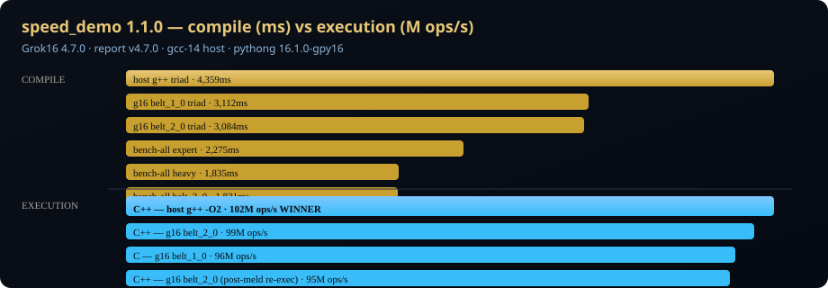

Distro 5.0.0 · suite speed_demo @ 1.1.0 · schema grok16-field-exec-full-bench/v5

default-X870-Pro-RS| Runner | Compile (ms) | Exec wall (ms) | ops/s | Binary bytes |
|---|---|---|---|---|
| C++ — g16 belt_2_0 | — | 3,071 | 102,843,184.74 | 22,912 |
| C++ — host g++ -O2 | — | 3,083 | 101,093,393.65 | 21,640 |
| C — g16 belt_1_0 | — | 3,006 | 99,454,820.63 | 16,192 |
| CMake — host g++ -O2 | — | 3,014 | 98,892,364.74 | 21,640 |
| C — host gcc -O2 | — | 3,006 | 97,416,875.40 | 24,568 |
| C — g16 belt_2_0 | — | 3,006 | 95,729,447.71 | 16,248 |
| C++ — g16 belt_1_0 | — | 3,040 | 95,052,367.49 | 22,784 |
| C++ — g16 belt_2_0 (post-meld re-exec) | — | 3,008 | 93,388,093.30 | 22,912 |
| C++ — g16 sense belt_2_0 | — | 3,078 | 91,070,985.42 | 22,784 |
| Python — host CPython 3 | — | 3,110 | 843,828.62 | — |
| Python — gpy-16 GrokVM | — | 3,210 | 755,552.29 | — |
Cycle: field-plate-meld.py fuse + g16-compiler-sense-plate.py cycle before compiles. Doctrine: data/grok16-plate-meld-bench-doctrine.json
| Metric | Value |
|---|---|
| Meld generation | 0 |
| Plates fused | 0 |
| Compiler sense profile | belt_2_0 (unknown) |
| Sense vs belt_2_0 exec ratio | 0.8855 |
| Meld helps profile ladder | no |
10 profile runs from data/bench/latest.json (field-nexus-bench). Run: ./scripts/grok16-toolchain.sh bench-all
field_execution_ops_per_sec on identical speed_demo kernel.See Uncompiled execution · CMake & linking
cd Grok16
git checkout v5.1.0
export G16_PREFIX="$(pwd)"
export GROK16_SG_ROOT=/path/to/SG
export NEXUS_STATE_DIR=$GROK16_SG_ROOT/NewLatest/state
G16_PLATE_MELD_CMD=fuse SPEED_DEMO_TARGET_SEC=3 ./scripts/grok16-toolchain.sh exec-comprehensive-bench
./scripts/grok16-toolchain.sh exec-compareJSON: field-exec-full-bench.json · MD: SPEED-BENCH-REPORT.md